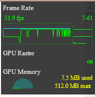

背景 传统的 javascript 动画是通过定时器 setTimeout 或者 setInterval 实现的。但是定时器动画一直存在两个问题，第一个就是动画的循时间环间隔不好确定，设置长了动画显得不够平滑流畅，设置短了浏览器的重绘频率会达到瓶颈，推荐的最佳循环间隔是17ms（大多数电脑的显示器刷新频率是60Hz，1000ms/60）；第二个问题是定时器第二个时间参数只是指定了多久后将动画任务添加到浏览器的UI线程队列中，如果UI线程处于忙碌状态，那么动画不会立刻执行。为了解决这些问题，H5 中加入了 requestAnimationFrame;
优点
requestAnimationFrame 会把每一帧中的所有 DOM 操作集中起来，在一次重绘或回流中就完成，并且重绘或回流的时间间隔紧紧跟随浏览器的刷新频率在隐藏或不可见的元素中，requestAnimationFrame 将不会进行重绘或回流，这当然就意味着更少的 CPU、GPU 和内存使用量
requestAnimationFrame 是由浏览器专门为动画提供的 API，在运行时浏览器会自动优化方法的调用，并且如果页面不是激活状态下的话，动画会自动暂停，有效节省了 CPU 开销
场景 js动画 requestAnimationFrame 本来就是为动画而生的，所以在处理 js 动画不在话下，与定时器的用法非常相似，下面是一个例子，点击元素时开始转动，再次点击转动速速增加。
1 2 3 4 5 6 7 8 9 10 11 12 13 var deg = 0 ;var id;var div = document .getElementById("div" );div.addEventListener('click' , function ( var self = this ; requestAnimationFrame(function change ( self.style.transform = 'rotate(' + (deg++) + 'deg)' ; id = requestAnimationFrame(change); }); }); document .getElementById('stop' ).onclick = function ( cancelAnimationFrame(id); };
大数据渲染 在大数据渲染过程中，比如表格的渲染，如果不进行一些性能策略处理，就会出现 UI 冻结现象，用户体验极差。有个场景，将后台返回的十万条记录插入到表格中，如果一次性在循环中生成 DOM 元素，会导致页面卡顿5s左右。这时候我们就可以用 requestAnimationFrame 进行分步渲染，确定最好的时间间隔，使得页面加载过程中很流畅。
1 2 3 4 5 6 7 8 9 10 11 12 13 14 15 16 17 18 19 20 21 22 23 24 25 var total = 100000 ;var size = 100 ;var count = total / size;var done = 0 ;var ul = document .getElementById('list' );function addItems ( var li = null ; var fg = document .createDocumentFragment(); for (var i = 0 ; i < size; i++) { li = document .createElement('li' ); li.innerText = 'item ' + (done * size + i); fg.appendChild(li); } ul.appendChild(fg); done++; if (done < count) { requestAnimationFrame(addItems); } }; requestAnimationFrame(addItems);
兼容性 firefox、chrome、ie10以上， requestAnimationFrame 的支持很好，但不兼容 IE9及以下浏览器，但是我们可以用定时器来做一下兼容，以下是兼容代码：
1 2 3 4 5 6 7 8 9 10 11 12 13 14 15 16 17 18 19 20 21 22 23 24 25 26 27 (function ( var lastTime = 0 ; var vendors = ['webkit' , 'moz' ]; for (var x = 0 ; x < vendors.length && !window .requestAnimationFrame; ++x) { window .requestAnimationFrame = window [vendors[x] + 'RequestAnimationFrame' ]; window .cancelAnimationFrame = window [vendors[x] + 'CancelAnimationFrame' ] || window [vendors[x] + 'CancelRequestAnimationFrame' ]; } if (!window .requestAnimationFrame) window .requestAnimationFrame = function (callback ) var currTime = new Date ().getTime(); var timeToCall = Math .max(0 , 17 - (currTime - lastTime)); var id = window .setTimeout(function ( callback(currTime + timeToCall); }, timeToCall); lastTime = currTime + timeToCall; return id; }; if (!window .cancelAnimationFrame) window .cancelAnimationFrame = function (id ) clearTimeout(id); }; }());
性能对比 以上面大数据渲染为例，我们向一个页面中插入1万条数据。setTimeout 后浏览器帧率：
下面是用 requestAnimationFrame 后浏览器帧率：

我们会发现，性能提升的还是很多的。所以还是很推荐使用 requestAnimationFrame;